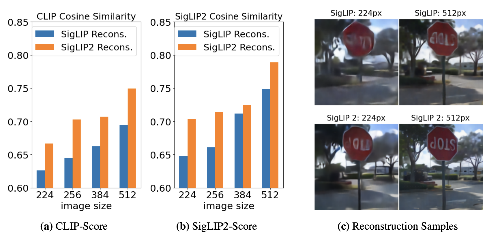

Abstract
Vision encoders are increasingly used in modern applications, from vision-only models to multimodal systems such as vision-language models. Despite their remarkable success, it remains unclear how these architectures represent features internally. Here, we propose a novel approach for interpreting vision features via image reconstruction. We compare two related model families, SigLIP and SigLIP2, which differ only in their training objective, and show that encoders pre-trained on image-based tasks retain significantly more image information than those trained on non-image tasks such as contrastive learning. We further apply our method to a range of vision encoders, ranking them by the informativeness of their feature representations. Finally, we demonstrate that manipulating the feature space yields predictable changes in reconstructed images, revealing that orthogonal rotations — rather than spatial transformations — control color encoding. Our approach can be applied to any vision encoder, shedding light on the inner structure of its feature space.
Reconstruct images from feature space

Figure 1. Image reconstructor training. For pretrained model we train a reconstructor model that restores the image from the feature space.
Figure 2. Reconstruction Metrics. We show the results of the reconstruction for SigLip and SigLip2 for different image resultions.
Feature-space transformations. Q matrix Calculation and Application.
Figure 3. Feature-space transformations. Q matrix Calculation. We then calculate Q matrix for feature-space manupulation.
Figure 4. Feature-space transformations. Q matrix Application. After Q matrix is calculated, we apply it to the feature space. For each patch embedding.
Feature-space transformations. Color Swap Examples.

Figure 5. Red-blue channel swap samples.

Figure 6. Eigenvalues for red-blue channel swap matrix. Majority of eigenvalues are close to 1, which means that the transformation is close to an identity matrix. While the other cluster of eigenvalues are close to -1, which means that for these channels direction is changed to the opposite.
Feature-space transformations. Blue Channel Suppression.
Figure 7. Blue channel suppression samples.
Figure 8. Eigenvalues for blue channel suppression matrix.
Feature-space transformations. Colorization.

Figure 9. Colorization samples.
BibTeX
@article{feature_analysis,
title={Image Reconstruction as a Tool for Feature Analysis},
author={Allakhverdov, Eduard and Tarasov, Dmitrii and Goncharova, Elizaveta and Kuznetsov, Andrey},
journal={arXiv preprint},
year={2024}
}